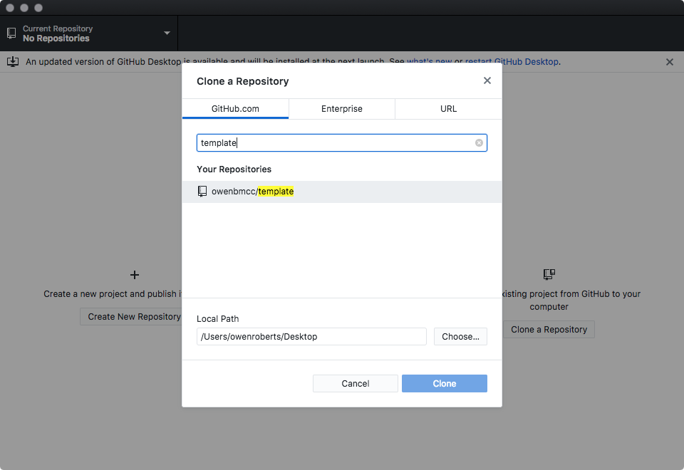

For the beginning of the class we'll all be working from the same templates, with CSS added on individual forks.
In order to do this, we need to fork the repo where I've created the base app.
A
Start by logging into GitHub and then navigating to my BMCC GitHub page github.com/owenbmcc.
Find the repo we created in class and then click the
This will make a copy of the repo in your own GitHub account.
To download the copy to your computer, open the GitHub Desktop Client application and clone the repo.
Then, you can edit the code and push to your own GitHub repository.